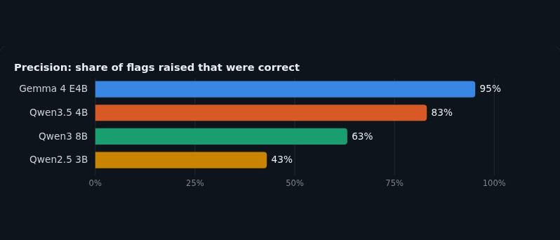
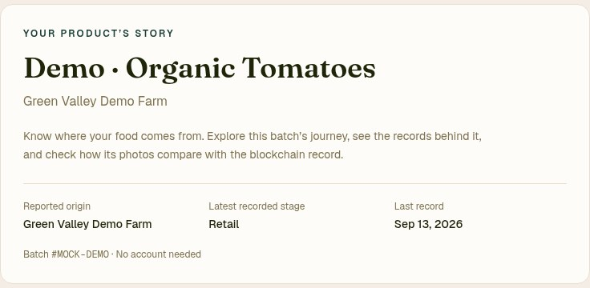
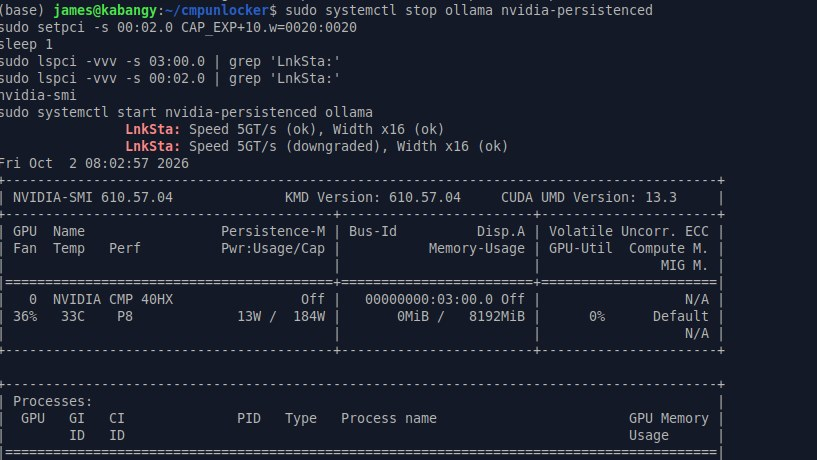
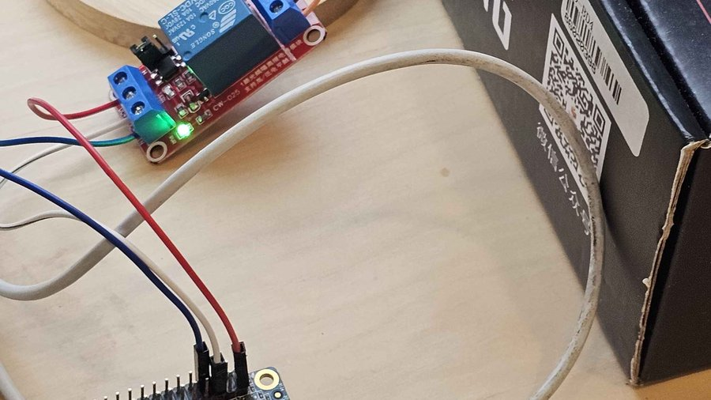
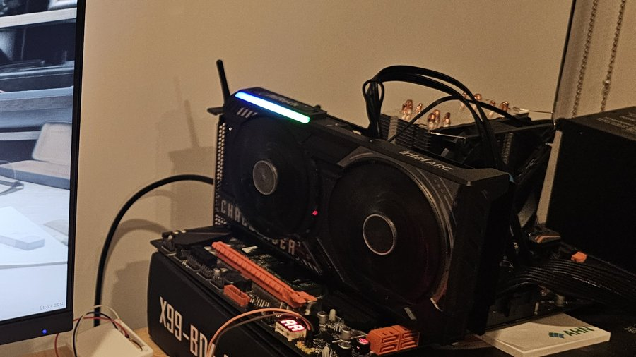

Master of Software Engineering (MSE-SS) student at Carnegie Mellon University, School of Computer Science; UC San Diego math, computer science, and linguistics grad — building web apps, LLM systems, and the hardware they run on outside of coursework.
Software, Systems & Hardware Projects
This is where I write up projects I build outside of coursework: software engineering first, with hardware and firmware experiments alongside.
Recently: a full-stack build on Next.js and Solana that won 1st place out of 168 teams at HackCMU, a KV cache reuse patch for the Rust inference engine mistral.rs, and an extraction benchmark of four local LLMs, the last two on an inference server I built from secondhand GPUs.
Pinned
FoodTrace
Farm-to-shelf provenance: each batch is a Solana NFT, stations prove presence with rotating HMAC QR codes, and anyone can re-hash photos against the chain.
HKN Member Portal
UCSD HKN's member portal: a Django REST API and Svelte/Tailwind app for events, induction and outreach hours, deployed to AWS EC2 by GitHub Actions.
kvsnap: KV cache reuse in mistral.rs
A 17-line Rust patch to an open source inference engine, checked token-for-token against recomputing the cache from scratch.
200 Bucks Inference Machine
Soldered the missing PCIe lanes, modded the BIOS for Resizable BAR and applied open source driver unlocks: prompt processing 12× faster, FP16 55×.
Latest
- driver CMP 40HX Unlock on X99 PCIe Gen2, 8 GiB ReBAR and a 55× FP16 unlock through patched NVIDIA kernel modules
- firmware Resizable BAR on X99 ReBarDxe inserted into the X99 BIOS for an Arc B580, after catching a 16-byte UEFITool corruption
- HW + Python Wake on LAN Retrofit A Python magic packet listener on an Orange Pi Zero presses the X99's power button over Tailscale
- Rust kvsnap: mistral.rs vs llama.cpp Gemma 4 time to first token from 54 s to 0.27 s with a 17-line mistral.rs patch
- ML eval Four Small LLMs on One 8GB Card Extraction benchmark on 78 labeled documents, Gemma 4 E4B at 95% precision
- full stack FoodTrace 1st of 168 teams at HackCMU: farm-to-shelf provenance on Solana with rotating HMAC QR codes
- hardware 200 Bucks Inference Machine Local LLM server from secondhand mining GPUs, PCIe x16 capacitor mod
Software and Systems Work

Four Small LLMs on One 8GB Card
Benchmarked Gemma 4 E4B and three Qwen models on schema-constrained extraction over 78 hand-labeled documents. Gemma led at 95% precision, beating a model twice its size.

FoodTrace
1st place out of 168 teams at HackCMU. Farm-to-shelf provenance where each batch is a Solana NFT, stations prove presence with rotating HMAC QR codes, and anyone can re-hash photos against the chain.

HKN Member Portal
Member portal for UCSD's HKN chapter with about 2,300 monthly users. A Django REST Framework API serves a Svelte and Tailwind single-page app for events, induction, outreach hours and interview scheduling, with email through Amazon SES and Google Sheets sync. Pushes to master deploy to AWS EC2 through GitHub Actions.

AS Funding Chatbot
Retrieval augmented chatbot using Pinecone and LangGraph for retrieval and GPT-4 for generation, built for Senate funding and reporting questions.

Course Planner
LLM-powered course planning assistant for UCSD students, using Neo4j and FAISS for retrieval to help map out class schedules based on major requirements.

GPU-Accelerated Empirical ML Replication
Jupyter Notebook project comparing CuML (RAPIDS GPU-accelerated ML) against standard CPU implementations, run on A30 and V100 GPUs through UCSD's Datahub, with data compressed as tar.xz to fit storage quotas and results visualized across several notebooks.

HMM Word Classifier
Linguistics 168 (Computational Speech Processing) project using Hidden Markov Models to classify fruit names from audio pronunciation, using librosa for audio processing.
Hardware and Firmware

CMP 40HX: PCIe 2.0, ReBAR and FP16 Unlock
Patched NVIDIA kernel modules lift the mining card's limits. FP16 went from 0.98 to 54 TFLOPS, generation doubled, and a manual root port retrain got Gen2 working on X99.

Wake on LAN Retrofit
A BIOS with no Wake on LAN, on Wi-Fi that isolates clients: a Python listener on an Orange Pi Zero validates magic packets over Tailscale and presses the X99's power button with a relay.

200 Bucks Inference Machine
Mining GPUs turned into a local inference server: PCIe x16 capacitor mod, patched CUDA kernels, and KV cache reuse on Gemma 4 cutting time to first token from 54 s to 0.27 s.

Resizable BAR on X99 for the Arc B580
Inserting ReBarDxe into the X99-BD4 BIOS, and catching a 16-byte corruption UEFITool left in a volume I never touched.

Intel Arc B580: The nuclear option(flash and dump)

Intel Arc B580: More GSC firmware recovery through igsc

Intel Arc B580: GSC firmware recovery and xe bring-up issues